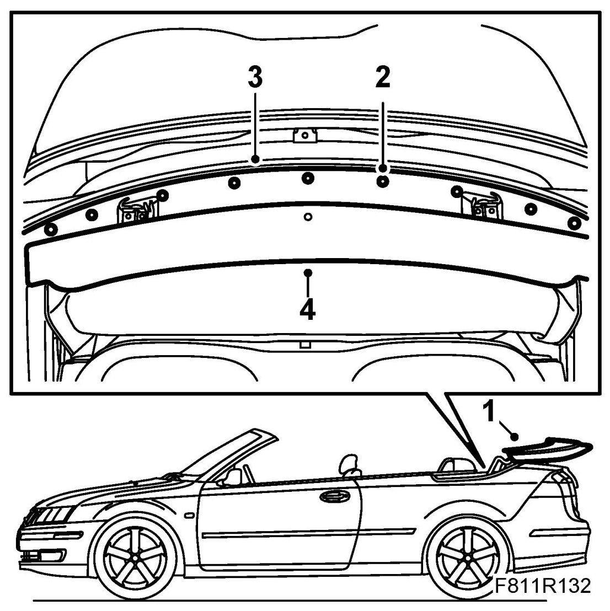
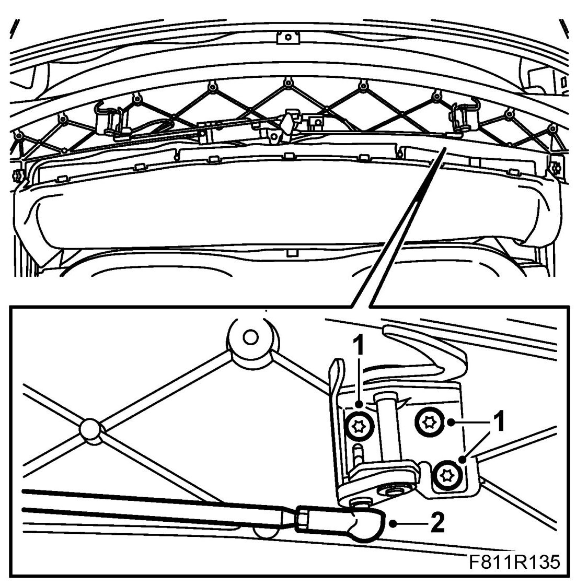
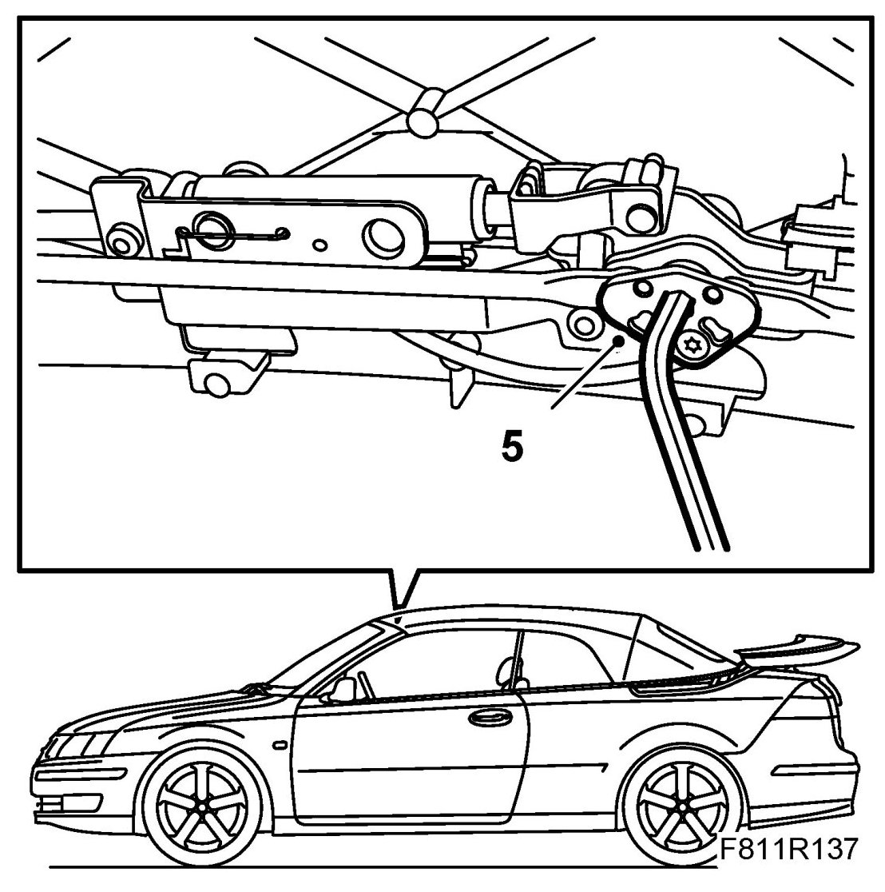
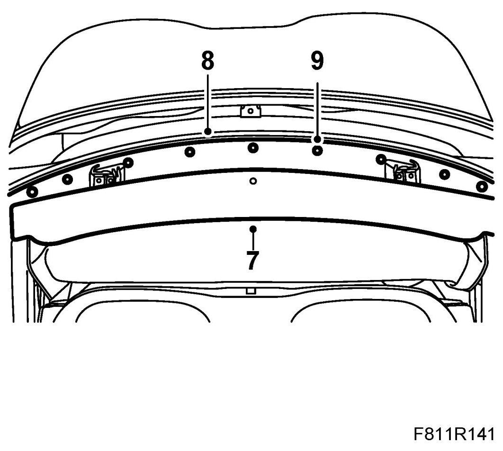

First Bow Lock Hooks
First Bow Lock Hooks
Removing
1. Open the soft top and leave the soft top cover up.

2. Remove the clips for the cover plate.
3. Remove the cover plate.
4. Remove the cover by pulling it backwards.
5. Pull apart the ball joint.
6. Remove the lock hook bolts. Lift away the lock hook.
Fitting
1. Loosen the headlining slightly to be able to grip the lock hook nuts. First put the bow's lock hook in mounting position. Fit the bolts.
Fold back the headlining.

2. Press together the ball joint.
3. Adjust the position of the lock hooks as described in Inspection and adjustment of first bow lock hooks.
4. Close the soft top manually.
5. Lock the first bow manually using the emergency operation tool.
NOTE: Make sure the sixth bow is not taut before locking the first bow.

6. Test the operation of the soft top.
7. Fit the cover.

8. Fit the cover plate.
9. Fit the cover plate clip.
10. Close the soft top.
11. Connect the diagnostics tool and erase any diagnostic trouble code.